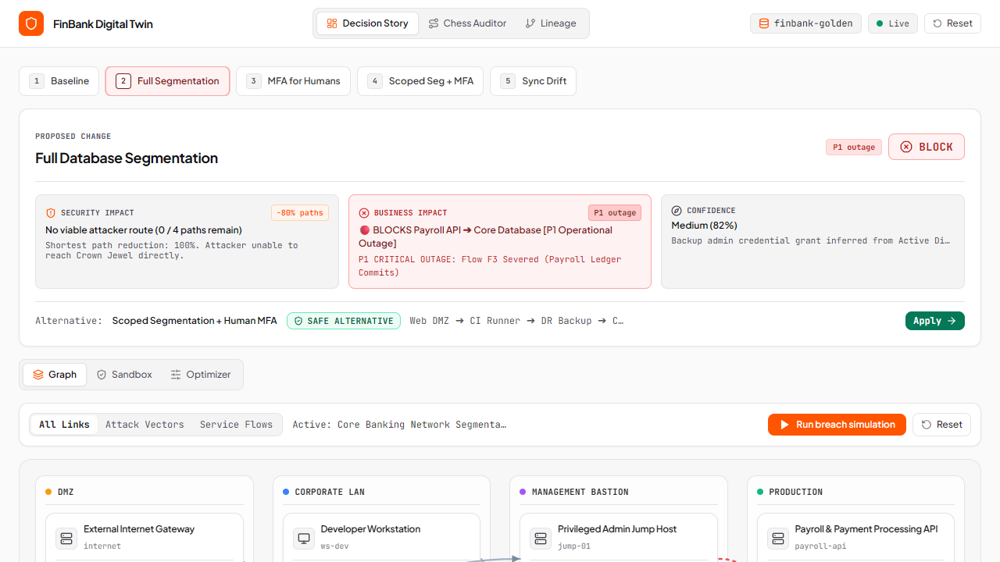
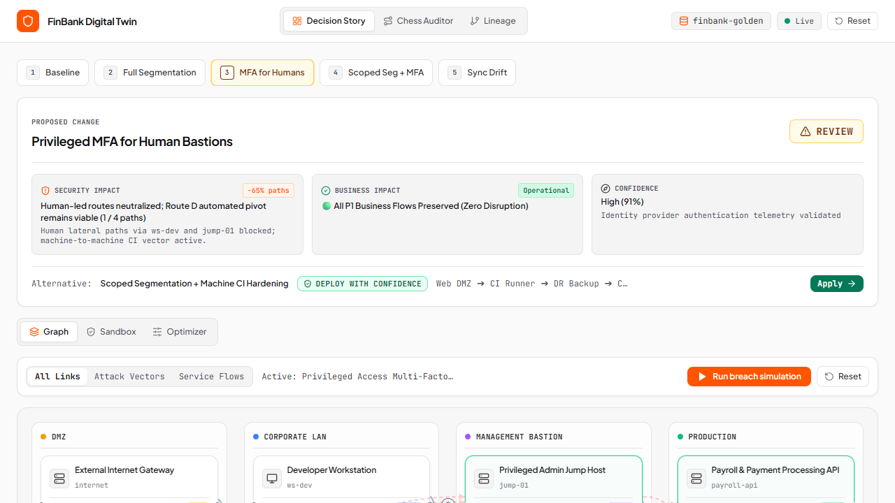
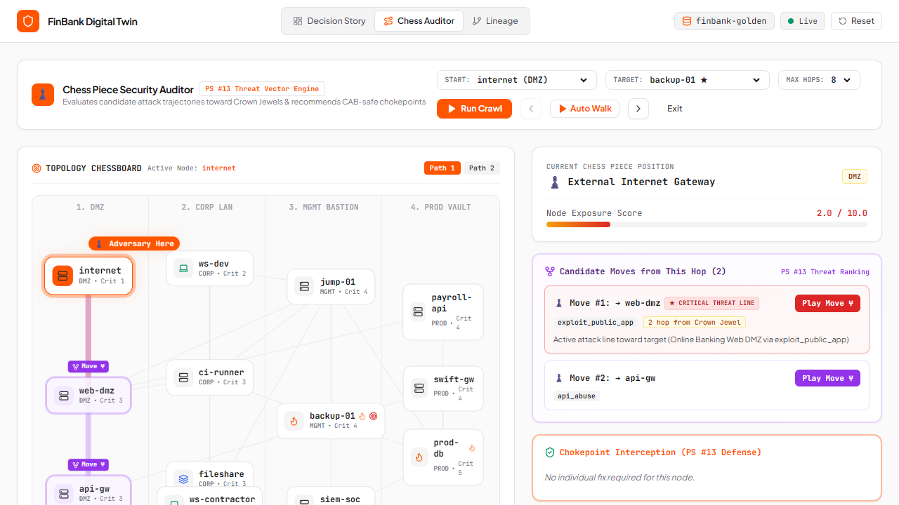
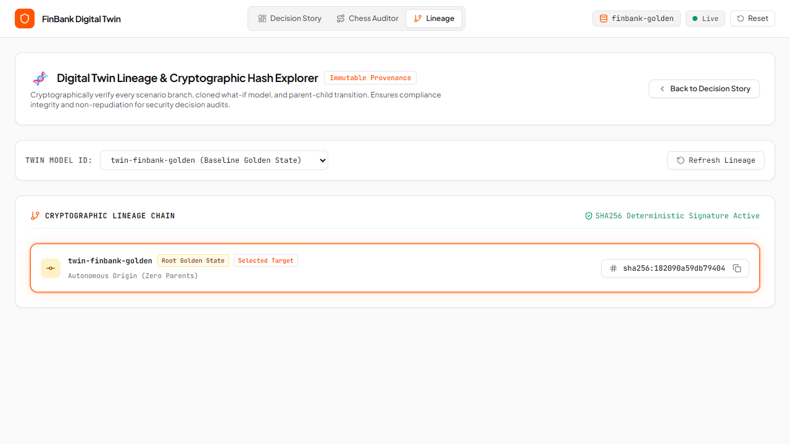

Break the Attacker.
Without Breaking the Business.
A cyber digital twin that tells a Change Advisory Board (CAB), for any proposed security control, both what it stops the attacker doing AND what it breaks in production — before you deploy it.
Security Teams Are Forced to Choose Between Two Halves of the Truth
Attack-path tools tell you a control helps. Cloud analyzers tell you a control breaks something. Neither joins both for the same change.
- ✖ Blind to business workflows (payroll, ACH, DB)
- ✖ Assumes passive attackers who give up
- ✖ Zero operational breakage telemetry
- ✖ Zero attacker context or threat vector models
- ✖ No MITRE ATT&CK technique correlation
- ✖ Siloed to one cloud, one control type
- ✔ Evaluates security AND business flow in 1 twin
- ✔ Adaptive attacker re-plans dynamically
- ✔ Decisive CAB Action: DEPLOY / REVIEW / BLOCK
The ServiceFlow: Elevating Business Operations to First-Class Graph Entities
In standard cybersecurity models, graphs only hold assets, vulnerabilities, and exploit edges. If you block an edge, the security graph looks healthier.
Every legitimate business dependency is registered as an immutable ServiceFlow with source, destination, protocol/technique, and business criticality (1 to 5).
Any proposed security control that severs a ServiceFlow with Criticality ≥ 4 (e.g. Payroll Ledger Commits or SWIFT Settlement) is instantly flagged as BLOCK.
Decoupled Dual-Engine Architecture & MITRE ATT&CK
Explores (node, frozenset(capabilities)) state-space. Edges are only traversable once prerequisites (credentials, tokens) are collected. Capped at depth 8, 5,000 states. Runs once per twin state, cached.
Samples 200–500 stochastic threat actor walks. Agent has local knowledge, not omniscience. When an edge is blocked, adaptation is emergent: agent re-plans via remaining admissible hops. Seeded RNG for 100% stage reproducibility.
Techniques live in YAML, never in code. Evaluators can inspect and live-edit costs, noise, and prerequisites on stage.
Why "Attack Paths Eliminated" Lies
The brief asks us to rank by paths eliminated. We do — and here is why that number is misleading, and what we deliver instead.
Assumes a static, passive attacker who approaches a blocked door and gives up. Gives the board false security confidence while the actual breach likelihood remains critical.
Models how much harder an active attacker has to work when pivoting around the control. Accounts for residual breach probability (Δ -70%) and machine-to-machine vectors.
The 4-Minute Demo: 5 Keyboard-Driven Presets (Keys 1–5)
A complete change board narrative executed seamlessly on stage with hotkeys.
| Key | Preset Scenario | Security Impact | Business Impact | Verdict |
|---|---|---|---|---|
| 1 | Baseline Estate | 4 critical paths, 82% risk | All flows operational | STANDBY |
| 2 | Full DB Segmentation | 0/4 paths remain (100% cut) | SEVERS Flow F3 Payroll (P1 Outage!) | BLOCK |
| 3 | MFA for Humans | -65% paths; Attacker pivots via Route D | Zero flows severed | REVIEW |
| 4 | Scoped Seg + Human MFA | Route D blocked, +340% effort | Zero flows severed (Safe) | DEPLOY |
| 5 | Sync Drift (Contractor Admin) | Risk spikes 12% → 68% via ws-contractor | Privilege boundary drift detected | REVIEW |
The Moment of Truth: A Control That Cuts Paths but Kills Payroll

Every edge into the database is locked down. An attack-path tool counts this as 100% path reduction.
F3: Payroll Transaction Ledger Commits
payroll-api → prod-db (Criticality 5/5). Deploying this rule immediately breaks bank payroll.
"Scoped Segmentation + Human MFA" preserves all service flows while blocking lateral attack vectors. One-click Apply →.
Emergent Adversary Adaptation: The CI/CD "Route D" Bypass

MFA blocks human lateral movement via Developer Workstation (ws-dev) and Admin Bastion (jump-01).
The attacker dynamically discovers non-interactive machine tokens on the automated build runner: web-dmz → ci-runner → backup-01 → prod-db
Zero flows are broken, but the crown jewel is still reached. Never deploy controls without evaluating machine-identity pivot paths.
Chess Piece Security Auditor & Chokepoint Cut-Sets

Evaluates current threat actor position, exposure score (2.0 to 10.0), and legal candidate moves with hops-to-crown-jewel distances.
Computes the mathematical minimum cut-set of edges needed to sever all critical paths to the crown jewel, ranked by cost efficacy ($1,500 on bastion vs $2,500 on database).
Automatically flags prod-db as the single asset with highest converging risk density.
Constrained Portfolio Optimizer: Security Under Budget & Zero Outages
Maximizing attack path elimination subject to budget AND inviolable business continuity.
Subject to: ∑ Cost(c_i) ≤ Budget ($5,000)
AND: Max Severed Flow Criticality < Threshold (≤ 3)
A naive optimizer chooses controls that eliminate the most paths regardless of damage. Our optimizer eliminates dangerous combinations before presenting the portfolio to leadership.
Continuous Synchronization & Cryptographic Lineage

Every digital twin state and what-if mutation is hashed. Provides non-repudiation and an immutable audit trail for governance compliance.
Simulates production drift: a contractor workstation (ws-contractor) is granted an admin role. The twin detects the regression instantly: risk spikes from 12% to 68%.
Supports Banking, Healthcare (Epic EHR + Infusion Pumps), AWS Cloud SaaS, and DoE Critical Power Grids, plus live JSON upload.
Engineering Discipline Worth Celebrating
Built like mission-critical financial software, not a throwaway hackathon prototype.
Runs in 2.82s. Tests written before the pathfinder existed to prevent silent algorithmic drift.
All collections are tuples & frozensets. 100% hashable for LRU content-addressed cache keys.
Seed is part of the cache key. Rehearsed numbers match stage numbers identically every single time.
Zero stochastic hallucinations in security decisions. Deterministic graph mathematics only.
Honest Positioning & Academic Integrity
"Adaptive attacker modelling exists in research — MAL Simulator, the CAGE challenges. Control impact simulation exists in cloud platforms — Azure's rule impact analyzer. To our knowledge no product joins security benefit and business breakage on one model for a single proposed change, which is the decision a change board actually makes."
- • "Nobody models attacker adaptation" (MAL & CAGE do)
- • "First to simulate network impact" (Azure does)
- • "We invented attack paths or blast radius" (Commodity)
- • First dual-graph model uniting MITRE ATT&CK + ServiceFlows
- • Automated Change Advisory Board (CAB) verdict engine
- • Constrained business continuity portfolio optimization
Deploy with Confidence.
Block with Mathematical Proof.
FinBank Digital Twin transforms security procurement from an internal debate into an objective, data-driven Change Board decision.